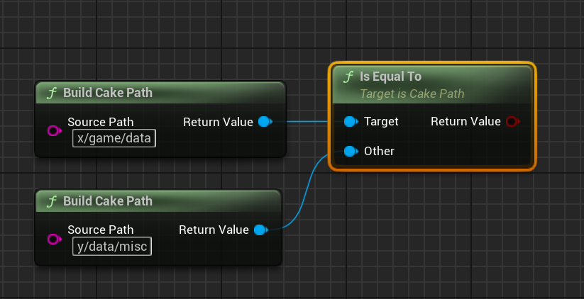

Paths
Overview
CakePath objects provide an ergonomic and standardized way to work with filesystem paths in Unreal Engine.
Source Code Information
Basic Usage
In this section we will cover the fundamental CakePath operations. Once you are comfortable using CakePaths, consider looking at the advanced usage section for examples of more complex operations.
Building CakePath Objects
The most straightforward way to build a new FCakePath is via the constructor, which accepts an FStringView.
Remember, CakePath objects will ensure path representation is standardized, so we can also submit Windows-style paths to the constructor.It also doesn't matter whether or not we include trailing path separators for directory paths. The following FCakePath objects hold the exact same path:
To build a combined path out of multiple string-like objects, we can use the static method BuildPathCombined.
When we want to make a new CakePath object, we can use BuildCakePath, supplying a string that represents the path that this CakePath object should hold.
Sometimes we might want to make an empty CakePath object and set its path information later, and for that we can use BuildCakePathEmpty, which will give us a CakePath object whose path is empty:
We can build a combined path with BuildCakePathCombined, which will create a combined path out of the two strings we supply as inputs:
In the example above, the path of the object returned would be X:/game/data/assets.
Copying Paths
To get a copy of an existing FCakePath, we can use either the copy constructor directly or call the function Clone on the source path.
FCakePath SourcePath{ TEXTVIEW("x/game/data") };
FCakePath CopyCtor { SourcePath };
FCakePath ClonedPath{ SourcePath.Clone() };
To copy just the path string, use ClonePathString:
To duplicate a CakePath object, we use Clone:
To duplicate just the path as a string, we use ClonePathString:
Reading the Path String
To read an FCakePath's path string, we can use operator* or GetPathString:
To read the path as a string, we can use GetPathString:
Modifying Paths
We can change the path of an existing FCakePath via SetPath, which takes a string-like object just like the constructor:
FCakePath SourcePath{ TEXTVIEW("x/game/data") };
SourcePath.SetPath(TEXTVIEW("y:/network/profiling/"));
SetPathViaOther:
FCakePath SourcePath{ TEXTVIEW("x/game/data") };
FCakePath NewPath{ TEXTVIEW("Z:/misc/data") };
SourcePath.SetPathViaOther(NewPath);
If we want to use move semantics instead of copy semantics, we can use StealPath:
FCakePath SourcePath{ TEXTVIEW("x/game/data") };
SourcePath.StealPath( FCakePath{ TEXTVIEW("Y:/netdb/player") } );
Note
Copy / Move constructors also can be used to model the exact same behavior. Use whichever better aligns to your style guidelines.
To check if an FCakePath's path is empty, we can use the IsEmpty member function:
FCakePath SourcePath{ TEXTVIEW("x/game/data") };
const bool bPathIsEmpty{ SourcePath.IsEmpty() }; // => false
Reset member function:
FCakePath SourcePath{ TEXTVIEW("x/game/data") };
SourcePath.Reset();
const bool bPathIsEmpty{ SourcePath.IsEmpty() }; // => true
Reset takes an optional size parameter that will reserve a buffer size for the internal FString that holds the path string:
FCakePath SourcePath{ TEXTVIEW("x/game/data") };
FCakePath NewPath{ TEXTVIEW("Z:/misc/data") };
SourcePath.Reset(NewPath.GetPathString.Len());
Note
NewReservedSize is just forwarded internally to the associated FString, and so Reset models the exact same behavior as FString::Reset.
To change the path that a preexisting CakePath object holds, we use SetPath, submitting a string that represents the new path that the CakePath object should use:
Note
In the example above, the path will be set to y:/network/profiling/.
If we want to set the path using another CakePath object's path, we can use SetPathViaOther:
Note
In the example above, the path will be Z:/misc/data after the call to Set Path resolves.
To check if a path is empty, we can use IsEmpty:
To clear any path a CakePath object holds, we use Reset:
Note
The parameter NewReservedSize can be used to reserve a minimum size for the internal path string. It is optional and should be left at 0 whenever you don't need to specify a reserve size.
Combining Paths
To make a new FCakePath that combines other FCakePath objects, use operator/ or Combine.
FCakePath PathGame { TEXTVIEW("x/game/") };
FCakePath PathHeroFile{ TEXTVIEW("hero/hero.fbx") };
FCakePath PathToHeroFileOperator{ PathGame / PathHeroFile };
FCakePath PathToHeroFileCombined{ PathGame.Combine(PathHeroFile) };
operator/ can be especially ergonomic if you are combining more than two paths at once:
FCakePath PathDrive { TEXT("x") };
FCakePath PathGameOnly{ TEXT("game") };
FCakePath PathDataOnly{ TEXT("data") };
FCakePath PathDataCombined = PathDrive / PathGameOnly / PathDataOnly;
FCakePath PathDrive { TEXT("x") };
FString PathGameString{ TEXT("game") };
FCakePath CombinedMix{ PathDrive / FCakePath(PathGameString) };
operator/, which also supports path concatenation, and then feed the combined FString into the FCakePath constructor, which will guarantee the final result is well-formed:
FString PathDriveString { TEXT("x") };
FString PathGameString { TEXT("game") };
FCakePath CombinedFromStrings{ PathDriveString / PathGameString };
To append another path onto a pre-existing FCakePath, we can use operator/= or CombineInline.
FCakePath PathMisc { TEXTVIEW("y/misc") };
FCakePath PathItemsDb{ TEXTVIEW("items/items.db") };
FCakePath PathCombineOperator{ PathMisc };
PathCombineOperator /= PathItemsDb; // => "y/misc/items/items.db"
FCakePath PathCombineInline{ PathMisc };
PathCombineInline.CombineInline(PathItemsDb); // => "y/misc/items/items.db"
To build a CakePath object whose path is the combination of two preexisting CakePath objects, we use Combine.
In the example above, the returned CakePath object's path will be x/game/data/assets/models.
To append one CakePath object's path directly onto another CakePath object, we can use CombineInline.
In the example above, the target CakePath object's path will be x/game/data/assets/models.
Path Equality
Path equality in Cake IO is simple: two CakePath objects are equal if they refer to the same location on the filesystem.
FCakePath uses operator== and operator!= for equality comparisons.
FCakePath PathData{ TEXT("x/game/data") };
FCakePath PathDataCopy{ TEXT("x/game/data") };
FCakePath PathMisc{ TEXT("y/game/misc") };
bool bPathsAreEqual{ false };
bPathsAreEqual = PathData == PathMisc; // => false
bPathsAreEqual = PathData == PathDataCopy; // => true
bPathsAreEqual = PathData != PathMisc; // => true
bPathsAreEqual = PathData != PathDataCopy; // => false
To check if two CakePath objects are equal, we use IsEqualTo:

To check if two CakePath objects are not equal, we use IsNotEqualTo:
Advanced Usage
Path Leaf Manipulation
The leaf of the path is its rightmost component. Given the path x/game/data, the leaf is data.
Leaf Extraction
To extract the leaf of a CakePath object as another CakePath object, we use CloneLeaf:
To get the leaf of a CakePath object as a string, we use CloneLeafString:
Note
The leaf can always be empty, so don't forget to check in the situations where that matters.
Modifying the Leaf
We can modify the leaf of a CakePath via SetLeaf:
We can get a copy of the CakePath with a new leaf via CloneWithNewLeaf, submitting a CakePath argument that is the leaf the cloned CakePath should use:
Note
Even though the examples show changing the leaf with single-component paths, leaf manipulation methods can also change the leaf with a multi-component path as well.
Parent Path Manipulation
The parent path of a given path is all path components to the left of the path leaf; the parent path of x/game/data is x/game/.
Parent Path Extraction
To clone a CakePath's parent path as a new CakePath object, we use CloneParentPath:
When we want the parent path as a string, we can use CloneParentPathString:
Note
The parent path can always be empty, so don't forget to check in the situations where that matters.
Modifying the Parent Path
We can modify the parent path of an existing CakePath object via SetParentPath:
To get a copy of a CakePath with a new parent path, we use CloneWithNewParent, submitting a CakePath argument that has the new parent path the cloned CakePath should use:
In both examples, the final path will be: z/network/remote/data.
Absolute Paths
CakePath objects can convert from relative paths into absolute paths. When converting relative paths into absolute paths, the location of the executable will be used as the anchor point for expansion. Thus, if we have a relative path game/data and our executable resides on /x/other/game.exe, converting game/data into absolute form will result in the path /x/other/game/data/.
However, if a path is already in absolute form then any absolute conversion will have no effect -- this means that absolute paths not relative to the executable's location will not be changed if an absolute conversion is attempted on them.
Hint
The executable location used for absolute path conversion will be different when you are running the Unreal Editor versus running a packaged project. Make sure you know the context in which your absolute conversions will be executed to avoid any surprises.
We can build an absolute path explicitly from a relative path source with BuildPathAbsolute:
BuildPathCombinedAbsolute:
FCakePath CombinedAbsPath{ FCakePath::BuildPathCombinedAbsolute(
TEXTVIEW("misc/data"),
TEXTVIEW("animations/hero")
)
};
Note
This function is a variadic template and can accept an indefinite number of string-like arguments.
To build a CakePath and ensure it is in absolute form, we use BuildCakePathAbsolute.
To build an absolute CakePath combined from two source path strings, use BuildCakePathCombinedAbsolute:
Using a pre-existing CakePath as the base path, we can create combined absolute paths via CombineAbsolute:
To clone a CakePath object and ensure the cloned path is in absolute form use CloneAbsolute.
If we just need the absolute path as a string, we can use ClonePathStringAbsolute:
To convert an existing CakePath object to absolute form, we use ToAbsoluteInline:
Replacing Subpaths
CakePath objects have an interface to support changing a subpath within their path. A subpath here is defined as a subsection of path components contained in a larger path: e.g., game/data is a subpath of /x/misc/game/data/other.
As an example, let's say that we are attempting to move a directory tree into another directory, maintaining the relative tree.
Hint
The following example(s) utilize function calls using struct parameter packs and designated initializer syntax. If you are unfamiliar with this, see section.
FCakePath SourcePath{ TEXTVIEW("x/game/data/misc/saves") };
FCakePath HostDirectory{ TEXTVIEW("x/game/data") };
FCakePath DestDirectory{ TEXTVIEW("y/archive/data") };
// FinalPath: "y/archive/data/misc/saves"
FCakePath FinalPath = SourcePath.CloneWithSubpathReplaced({
.OriginalSubpath = HostDirectory,
.NewSubpath = DestDirectory
});
UE_LOG(LogTemp, Warning, TEXT("ReplaceSubpath path: [%s]"), **FinalPath);
In the example above, by using CloneWithSubpathReplaced we were able to replace the subpath x/game/data with y/archive/data while maintaining the rest of the relative tree misc/saves. The resultant path is y/archive/data/misc/saves.
If we want to change a subpath of an existing CakePath object instead of generating a copy, we can use SubpathReplaceInline:
FCakePath SourcePath{ TEXTVIEW("x/game/data/misc/saves") };
FCakePath HostDirectory{ TEXTVIEW("x/game/data") };
FCakePath DestDirectory{ TEXTVIEW("y/archive/data") };
// SourcePath is now: "y/archive/data/misc/saves"
SourcePath.SubpathReplaceInline({
.OriginalSubpath = HostDirectory,
.NewSubpath = DestDirectory
});
UE_LOG(LogTemp, Warning, TEXT("SubpathReplaceInline path: [%s]"), **SourcePath);
As with the previous example, the resultant path is y/archive/data/misc/saves.